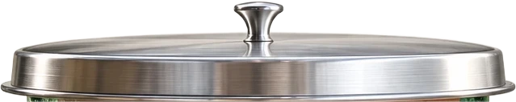
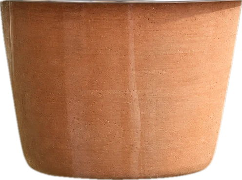
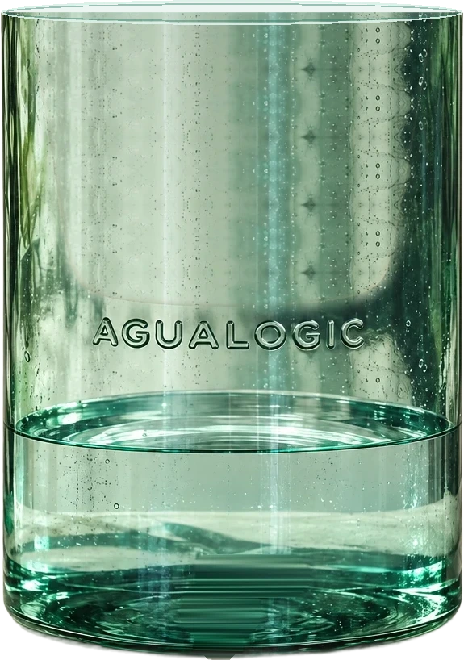
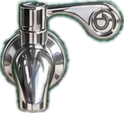

- Un purificador por gravedad hace pasar el agua por una cerámica con poros diminutos, gota a gota, sin electricidad.
- Se compone de vasija de cerámica, depósito, grifo y tapa.
- La cerámica grande deja pasar 1,5 a 2,5 litros por hora; la cerámica mini, unos 0,6.
Un purificador de agua por gravedad es un recipiente que limpia el agua sin enchufe, sin presión de red y sin instalación. Vierte agua arriba, espera, y abajo tienes agua lista para servir. Así de simple.
¿Qué es un purificador por gravedad?
Es un equipo que usa la fuerza de la gravedad para hacer pasar el agua por una vasija de cerámica. La cerámica tiene poros tan pequeños que retienen partículas, mientras el agua pasa gota a gota.
¿Lo has oído llamar filtro? El filtro es solo la pieza interna de cerámica; el purificador es el equipo completo. Mira la diferencia entre filtro y purificador.
Cómo funciona, paso a paso
El recorrido del agua
Cuatro pasos, sin enchufe y sin presión de red.
Sus partes
Las partes de tu purificador
Toca cada pieza, muévela y mírala de cerca.
Toca una pieza para verla de cerca y arrástrala para moverla

1
2
3
4Cómo se reparten los 20 litros
El reparto de la capacidad
Cómo se suman los 20 litros del modelo grande.
8 L + 12 L = 20 L. La capacidad de 20 litros es la suma de los dos: el agua lista para servir es la del depósito.
Según el modelo, también puedes ponerle una base o soporte. Los tamaños son varios: de 5,5 litros para una persona hasta 20 litros para toda la familia. Aquí están los tres tamaños con medidas.
¿Cuánta agua entrega y de dónde?
Según AguaLogic, la cerámica grande deja pasar entre 1,5 y 2,5 litros por hora, y la cerámica mini unos 0,6 litros por hora. Por eso se usa cargado: tu agua se va purificando mientras haces otras cosas.
El fabricante indica que acepta agua de acueducto, pozo, aljibe y lluvia, y que retiene sedimentos, turbiedad, cloro y microplásticos, entre otros, conservando los minerales. En los ensayos del Laboratorio de Ingeniería Ambiental de la Universidad Nacional, la turbiedad bajó un 95,2 % con la cerámica pequeña, y con la cerámica grande los coliformes y la E. coli llegaron a cero.
Esos ensayos se hicieron con agua preparada en laboratorio y sus resultados valen para esa muestra. Cada agua es distinta.
Cuidados básicos
El ciclo de cuidado
Tres momentos que conviene recordar.
- Cúrala al empezar: las primeras 5 cargas se usan para regar. Mira cómo curar la vasija.
- Límpiala según la calidad del agua, con cepillo suave y sin jabón.
- Cambia la cerámica cada unos 2 años.
Purificadores por gravedad en Villavicencio
En Pureza Natural, distribuidor autorizado de AguaLogic en Villavicencio, consigues estos purificadores por gravedad:
- Mini de peltre (5,5 litros): $380.000, pensado para una persona.
- Peltre de 20 litros: $540.000.
- Vidrio verde de 20 litros: $810.000.
El envío es gratis en el casco urbano de Villavicencio; fuera del perímetro urbano tiene un valor adicional. También puedes recogerlo en nuestro punto de San Isidro, avisando antes por WhatsApp.
¿Quieres ver uno funcionando?
Escríbenos y te explicamos cómo funciona y cuál te conviene.
Preguntas frecuentes
¿Dónde comprar un purificador de agua por gravedad en Villavicencio?
En Pureza Natural, distribuidor autorizado de AguaLogic. Pides por WhatsApp o desde el catálogo, y lo recibes en casa o lo recoges en el punto de San Isidro.
¿Cuánto cuesta un purificador por gravedad?
El mini de peltre de 5,5 litros cuesta $380.000, el de peltre de 20 litros $540.000 y el de vidrio verde de 20 litros $810.000.
¿Un purificador por gravedad necesita luz?
No. Funciona solo con la gravedad: el agua pasa por la cerámica sin electricidad ni presión de red.
¿Qué es la vasija de barro?
La pieza de cerámica con poros diminutos por donde pasa el agua. Va dentro del purificador y se limpia según la calidad del agua.
¿Cada cuánto se limpia?
Depende de la calidad del agua: límpiala cuando veas sedimentos o notes que gotea más lento, con un cepillo suave y sin jabón.
¿Sirve para agua de acueducto?
Según AguaLogic, el equipo acepta agua de acueducto, pozo, aljibe y lluvia. Los resultados dependen de cada agua.
¿Cuánta agua puede purificar por hora?
Según AguaLogic, entre 1,5 y 2,5 litros por hora la cerámica grande y unos 0,6 litros por hora la cerámica mini.
¿Cómo elijo la capacidad adecuada?
Cuenta unos 2 litros por persona al día. Para 1 persona sirve el de 5,5 litros; para 2 o más, el de 20 litros. Recuerda que en el de 20 litros, 8 litros van en la vasija y 12 en el depósito. Mira la guía.
¿Dudas de qué comprar? Lee qué purificador elegir según tu familia o la guía de purificadores en Villavicencio. Mira también los modelos en el catálogo.